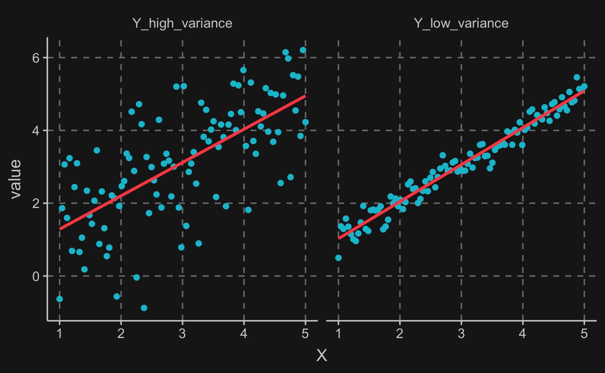
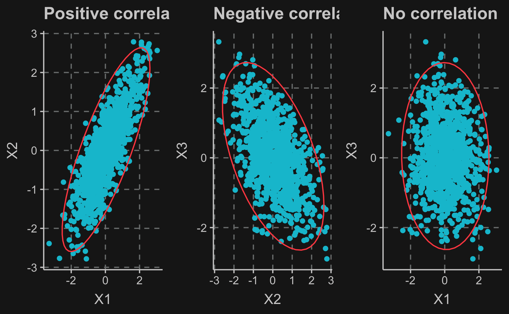

Before we dive into topics of causal inference, we review some basic concepts of probability and statistics. All methods that we will use later in this course are based on statistical models and these in turn, require probability theory. But we will keep it as short as possible as our focus and learning goal lies more on applications and coding than on the theoretical part.
Probability
First, we will review some basic concepts of probability theory.
Basic rules of probability
A probability is always linked to an event typically denoted by a capital letter, e.g. \(A\) and expresses how likely this event is to happen. Several events build a set of events \(A,B \subseteq \Omega\). Probabilities to describe the chance of occurrence of event \(A\) are always between \(0\) and \(1\). The occurrence of an event \(A\) implies \(P(A) = 1\), while the impossibility of event \(A\) occurring implies \(P(A) = 0\).
\(P(\overline{A})\) is the compliment of \(P(A)\), so \(\overline{A}\) is what happens, when \(A\) does not happen. Consequently as either \(A\) or \(\overline{A}\) occurs, the probability of either event occurring is \(P(A) + P(\overline{A}) = 1\). Generally, if two events \(A\) and \(B\) are mutually exclusive, i.e. only one of those events can happen, then \(P(A \cup B) = P(A) + P(B)\), where \(\cup\) represents the union of both events. The probability of either event happening is equal to the sum of the individual probabilities.
In contrast, if the two events are not mutually exclusive, the probability of both events happening is calculated by \(P(A \cup B) = P(A) + P(B) + P(A \cap B)\) with \(P(A \cap B)\) being the intersection of both events, i.e. the probability of both events happening. This formula is based on the addition rule.
The aforementioned intersection \(P(A \cap B)\) can be calculated by the multiplication rule: \(P(A \cap B) = P(A|B) * P(B) = P(B|A) * P(A)\), where \(P(A|B)\) denotes the probability of \(A\) happening given that \(B\) has happened.
The total probability rule states that \(P(A) = P(A \cap B) + P(A \cap \overline{B})\).
Already used above, \(P(A|B)\) is called a conditional probability and is defined by:
\[
P(A \mid B) = \frac{P(A \cap B)}{P(B)}
\]
It can be thought of as the probability of an event \(A\) after you know that \(B\) is true. Essentially, it computes the possibility of event \(A\) and \(B\), normalized by the probability of \(B\) occurring.
Another important concept when dealing with probabilities of events is stochastic independence. In case of two events being independent, the conditional probability is equal to the probability of the event happening anyways:
\[
P(A \mid B) = P(A)
\]
A typical example of independence is to roll a die twice. The second roll does not depend on the first one and each outcome is as likely independent of the first roll. This also means that
\[
P(A \cap B) = P(A) \ P(B)
\]
Probability Tree
An intuitive way to think about probabilities are probability tree. Branches from one node always sum to \(1\) in probability as one (and only one) of the events has to happen. The probability of two consecutive events is obtained by multiplying the probabilities. Here, all events are independent and therefore all probabilities are \(0.5\) and therefore: \(P(A \mid B) = P(A)\).
!!! Explanation conditional probability (dependent example)
!!! Assignment: some empty gaps
Set Theory
An extremely useful tool to visualize the occurrence and relationship between events are Venn diagrams from set theory.
Let’s use an example to understand the rules mentioned above using a Venn diagram: suppose you are working in a company that has developed an application available on three different kind of devices, smartphones, tables and computers. So far your pricing plan is very simple and you have just charged the same amount from all customers, regardless of what and how many devices they use.
But now you want to review your pricing plan and evaluate whether it could make sense to offer pricing plans that differ in the device and number of maximum devices that can be used per account. So first of all you collect usage data of a random sample of 1000 customers from the last month to get an idea of the current distribution.
library() loads external packages/libraries containing functions that are not built in base R.
tibble() is the most convenient way to create tables. You specify column name and content and assign your tibble to an object to store it.
ifelse(test, yes, no) is a short function for if…else statements. The first argument is a condition that is either TRUE or FALSE and determines whether the second or third argument is returned.
rbinom(n, size, prob) samples n values from a binomial distribution of a given size and with given probabilities prob.
mutate() is one of the most important functions for data manipulation in tables. It is used to either create or change variables/columns. You provide the column name (new or existing) and then specify how to create or change the values in that specific column. For example, mutate(table, new_variable = existing_var / 100), which is equivalent to table %>% mutate(new_variable = existing_var / 100).
── Conflicts ──────────────────────────────────────────────────────────────────────────────────────────────────────────────── tidyverse_conflicts() ──
x dplyr::filter() masks stats::filter()
x dplyr::lag() masks stats::lag()
# Nmber of obervationsn <-1000# Create tibbleapp_usage <-tibble(# Create user_id in increasing orderuser_id =1:n,# Randomly sample if smartphone was usedsmartphone =rbinom(n, 1, 0.6),# Sample if tablet was used. More likely if smartphone was not used.tablet =ifelse(smartphone ==1, rbinom(n, 1, 0.2), rbinom(n, 1, 0.7)),# Sample if computer was used. More likely if tablet was not used.computer =ifelse(tablet ==1, rbinom(n, 1, 0.1), rbinom(n, 1, 0.5)))# If no device has value of 1, we set smartphone to 1app_usage <- app_usage %>%mutate(smartphone =ifelse(sum(smartphone, tablet, computer) ==0, 1, smartphone))
Here, we simulated some artificial data. Seeing the formulas used for constructing the data, we already know that e.g. customers tend not to use the app on both tablet and computer.
To see the first lines of a table (for example a tibble() or a data.frame(), you can use the head(table, n) function, where n specifies how many rows you want to see.
A general overview of total customers per device category shows that in the smartphone category there are the most users and in the computer category there are the least.
Summing all values by column is done by colSums(table). For rows, you would use rowSums(table).
Now let’s see what the Venn diagram says, which is a diagram showing the relation between sets. We can see the union, intersection differences and complements in the diagram.
which() checks a condition and returns the indices.
Bayes theorem states the mathematical formulation for determining a conditional probability, exemplary the likelihood of \(A\) occurring conditioned on \(B\) having happened before.
You will often hear Bayes theorem in connection with the terms updating beliefs. You start with a prior probability \(P(A)\) and collecting evidence \(P(B)\) and the likelihood \(P(B|A)\), you update your prior probability to get a posterior probability \(P(A|B)\). That is in fact the foundation of Bayesian inference. Look it up if you want, but you won’t need Bayesian inference for this course.
To understand how useful Bayes theorem is, let’s use an example: Imagine, you are quality assurance manager and you want to buy a new tool that automates part of the quality assurance. If the tool finds a product it considers faulty, an alarm is triggered. The seller of the tool states that if a product is faulty, the tool is 97% reliable and if the product is flawless, the test is 99% reliable. Also, from your past experience you know that 4% of your products come out with flaws.
To assess the usefulness of the tool in practice you want to know the following probabilities:
What is the probability that when the alarm is triggered the product is found to be flawless?
What is the probability that when the alarm is triggered the product is found to have flaws?
Using Bayes theorem and the formulas will help you to arrive at the correct answers and guide your decision whether to buy the tool.
We should start by defining the events and event sets:
\(A\): product is faulty vs. \(\overline{A}\): product is flawless
\(B\): alarm is triggered vs. \(\overline{B}\): no alarm
Also, from our past experience and the producers specifications we already know some probabilities:
\(P(B|A) = 0.97\) and consequently \(P(\overline{B}|A) = 0.03\)
\(P(B|\overline{A}) = 0.01\) and consequently \(P(\overline{B}|\overline{A}) = 0.99\)
\(P(A) = 0.04\) and consequently \(P(\overline{A}) = 0.96\)
Note, that what we are looking for is not the same as what the manufacturer states in his/her specifications. What we are looking for is \(P(\overline{A}|B\) (1) and \(P(A|B)\) (2) and we will need Bayes theorem to obtain those probabilities.
Now we can see, that we have all the information we need to compute the desired probabilities. \(P(A|B)\) (2) is calculated by
(0.97*0.04) / ((0.97*0.04) + (0.01*0.96))
[1] 0.8
and \(P(\overline{A}|B)\) (1) by
(0.01*0.96) / ((0.01*0.96) + (0.97*0.04))
[1] 0.2
These results show that in case the alarm is triggered, there is still a possibility of about 20% that the product is flawless and in only 80% of cases the product is faulty. Depending on your current method of quality assurance, these numbers might make you think more about buying the tool. And also note, how these numbers give a different perspective compared to what the manufacturer said.
Statistics
Now we will talk about some statistical concepts, that are the foundation for modeling processes in both statistical and causal inference.
Random Variable
For starters, let’s define what a random variable is. Often represented by letters such as \(X\), a random variable has a set of values, also called sample space, of which any could be the outcome if we draw from this random variable. Think for example about a die (six possible outcomes). The likelihood of outcomes are defined by a probability distribution that assigns each outcome a probability (for a die, 1/6 for each outcome). A random variable can either take on discrete (e.g. die( or continuous values (e.g. average height of random people).
Expected value
Because a random variable can take on different values, we cannot represent it as a scalar. However, the expected value of random variable is a scalar and represents something like a “summary” of the random variable with its values and its probability distribution.
Before we define the expected value, we need to introduce the summation operator \(\sum\), denoted by the Greek capital Sigma.
In general, it is used to reduce the sum of a sequence of numbers, like sampled values from a random variable, \(x_1, x_2, …, x_n\) to a shorter and more readable form
\[
\sum_{i=1}^nx_i \equiv x_1+x_2+\ldots+x_n
\]
with the arbitrary index of summation \(i\) being the lower limit and \(n\) the upper limit.
By basic math rules, the following simplifications are possible, where \(c\) is a constant:
\[
\sum_{i=1}^nc=nc
\]
and
\[
\sum_{i=1}^ncx_i=c\sum_{i=1}^nx_i
\]
A statement, that you will see a lot in many applications and formulas is the average of a sequence of numbers, typically denoted by a line over a variable. Some equivalent forms of writing down the calculation for the average are shown here:
This brings us to the first important basic concept we will need throughout the course, the expected value, also called population mean. The expected value of a random variable \(X\) is defined as the weighted average of possible values the random variable can take. The weight is equal to the probability of the random variable taking a specific value.
Considering a finite list of potential values \(x_1, x_2, …, x_k\) with probabilities \(p_1, p_2, …, p_k\), the expectation of \(X\) can be computed by
Knowing how to compute the expected value of a random variable is essential for computing other statistics such as variance, standard deviation, covariance, correlation etc.
Variance
Before we define variance, let’s see why it is important to know it. On both graphs we see almost the same line (small difference because of sampling) going through the data points. It is the line that fits the data best. However, there is a difference in how the data points are distributed. On the left graph, there is high variance compared to the right graph. That means, the data is more dispersed.
!!! conditional expectation
seq(from, to, by) or seq(from, to, length.out) returns a vectors with a sequence as specified by the arguments.
rnorm(n, mean, sd) samples values from the normal distribution. n specifies the number of values, mean and sd define the parameters of the normal distribution.
map() is a very useful function when you want to apply a function to each element of a list or a vector.
pivot_longer() changes the format of a table by pivoting columns into rows. To pivot rows into columns, you need pivot_wider().
`geom_smooth()` using formula 'y ~ x'

Mathematically, the variance is defined as the expectation of the squared deviation of a random variable from its population or sample mean. The sample variance indicates how far a set of observed values spread out from their average value and is an estimate of the full population variance, that in most cases cannot be directly observed due to lack of data of the whole population.
Mathematically, the population variance is defined as
You might have noticed the term \((n-1)^{-1}\) is different from what you probably expected (\(n^{-1}\)). This is due to a correction, which at this point you should not have to worry about. However, the larger the sample is, the less important this correction is.
A related measure is the standard deviation, which does not have as many desirable properties for computational purposes but is often reported after all calculations to show the spread of distribution.
The standard deviation obtains as the square root of the variance:
\[
\sigma = \sqrt{\sigma^2}
\]
A useful and convenient properties of the variance is that constants have a variance of 0. But if you want to scale a random variable by a constant factor of \(a\), then the variance will increase by \(a^2\).
\[
Var(aX+b)=a^2V(X)
\]
You can also conveniently compute a variance for the sum of two random variables
which in case of independence reduces to the sum of the individual variances due to the fact that \(E(XY) = E(X)E(Y)\).
Covariance
Covariance determines the relationship between two or more random variables, i.e. how they behave to each other. For example, when the weather is hot, there are more ice cream sales, so these two random variables move in the same direction. Others do not have any statistical association or move into opposite direction.
as_tibble() or as.data.frame() can be used to change e.g. matrices or lists into tables.
rbind() or bind_rows() are used to bind rows, vectors or tables to one table. They behave slightly different, so you should know both functions. The counterparts for columns are cbind() and bind_cols().
To rename columns, you can use rename(new_name = old_name).
Warning: The `x` argument of `as_tibble.matrix()` must have unique column names if `.name_repair` is omitted as of tibble 2.0.0.
Using compatibility `.name_repair`.
This warning is displayed once every 8 hours.
Call `lifecycle::last_lifecycle_warnings()` to see where this warning was generated.
From left to right, the graph shows a positive covariance, a negative covariance and no covariance at all.

If the equality \(E(XY) = E(X)E(Y)\) holds, then it implies a covariance of 0 between the variables \(X\) and \(Y\). Covariance is a measure of linear dependency and hence, independence implies a covariance of 0. Looking back at the formula of the variance of the sum of two random variables, it thus can be said that it is the sum of variances of both random variables plus two times their covariance.
As a matter of form, the formula for the covariance of the random variables \(X\) and \(Y\) is
\[
Cov(X,Y) = E(XY) - E(X)E(Y)
\]
But, similar to variance, the interpretation of a covariance is not very easy and in most cases, for the purpose of interpretation, it is preferred to look at the correlation which can be derived from the covariance if the individual variances are known.
The correlation is a standardized measure and is by construction bound between -1 and 1. High values in magnitude (close to 1 or -1) indicate a very strong linear relationship, while the direction of this relationship is represented by the algebraic sign.
Conclusion
Many of the rules and concepts that you have just learned will play a crucial in the upcoming chapters. Their understanding will guide you through and let you understand why we need to put a particular emphasis on causality, how we can isolate causal effects and build the foundation for many methods from our toolbox.
Assignments
Load data with the two variables \(age\) and \(income\).
Compute
expected value
variance
standard deviation
for both variables.
Then, examine the relationship between the two variables and compute covariance and correlation.